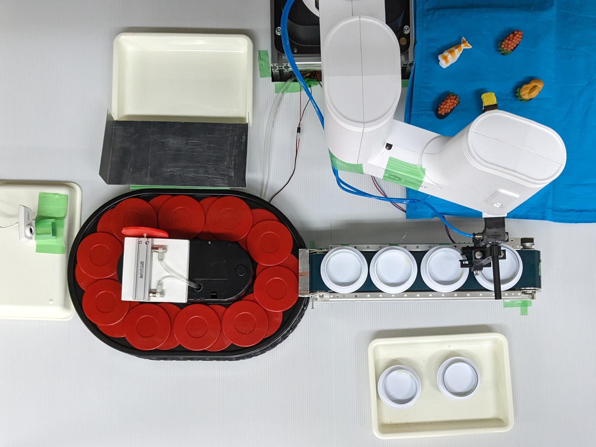
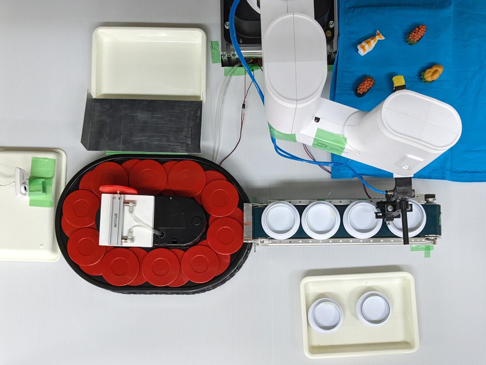

About
2023年度4年次に半年間の実習・研究活動を行いました。 「小規模な回転寿司店のDX」を研究課題として5人チームでロボットを制作し、新しくどのような価値を提案できたかを5チームで競いました。 私は研究チームのリーダーとして、研究のコンセプトを決め、メンバーにタスクを割り振り、システム設計を行いました。 高専祭展示の日に成果発表を行い、約450人の来場者投票の中で得票数2位の473票を獲得しました。 完成したロボットは以下の通りです。
 

Achievement
私は研究チームのリーダーとして、研究のコンセプトを決め、メンバーにタスクを割り振り、システム設計を行いました。 またプレゼンの資料作成と会計も主に担当しました。